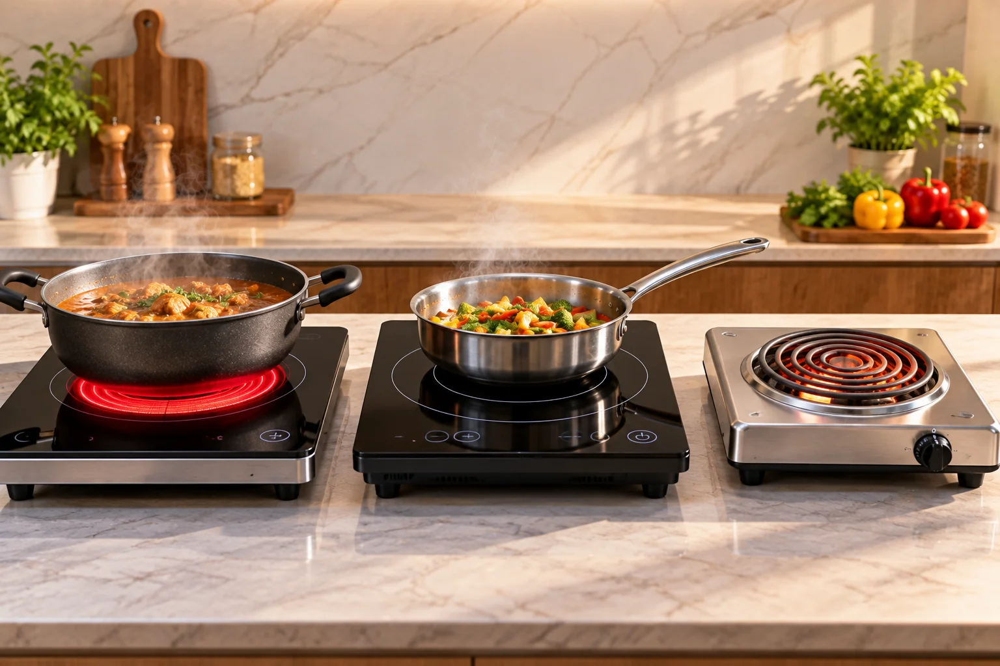
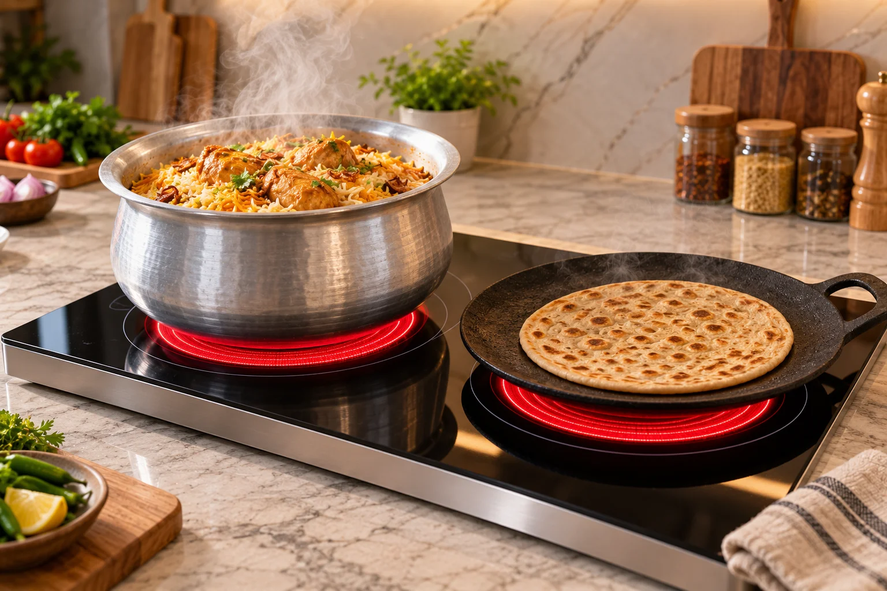

Infrared vs Induction vs Hot Plate: Which Electric Stove Is Best?
Quick answer: For most Pakistani kitchens an infrared ceramic cooker is the best choice because it works with all flat-bottom pots — aluminium, steel, iron and ceramic. Induction is slightly more efficient but only works with magnetic cookware. A coil hot plate is cheapest but slowest and least efficient.

Image slot — upload images/infrared-vs-induction-vs-hot-plate-hero-1.webp
Image slot — upload images/infrared-vs-induction-vs-hot-plate-hero-2.webpSide-by-side comparison
| Infrared ceramic | Induction | Coil hot plate | |
|---|---|---|---|
| Cookware | All flat-bottom pots | Magnetic steel/iron only | All |
| Aluminium degchi | ✔ Works | ✘ No | ✔ Works |
| Heating speed | Fast | Fastest | Slow |
| Roti on tawa | Excellent | Good (iron tawa only) | Fair |
| Cleaning | Flat glass, easy | Flat glass, easy | Hard |
| Price in Pakistan | Rs 17,000 – 42,000 | Rs 8,000 – 40,000 | Rs 1,500 – 3,000 |
Electric induction stove price in Pakistan — and the hidden cost
Induction cookers look cheap, but most Pakistani households cook in aluminium pots. Switching to induction usually means buying a new set of magnetic cookware. Infrared avoids that cost completely.
Recommended infrared cookers
Glam Gas Hot Glow-920 Dual Burner Infrared Cooker
 Image slot — upload images/compare-hot-glow-920-1.webp
Image slot — upload images/compare-hot-glow-920-1.webp Image slot — upload images/compare-hot-glow-920-2.webp
Image slot — upload images/compare-hot-glow-920-2.webpRs 40,800 (glamgas.com, checked 2026-09-28)
Two infrared burners for families replacing a gas hob entirely — built-in or tabletop.
- Type: Double-burner infrared ceramic hob — built-in or tabletop
- Power: 2200W (dual power mode)
- Pot load: 15–18 kg per burner
- Electricity: ≈1.5 units/hour per burner (brand figure)
- Best for: Full family kitchens cooking two dishes at once
- Warranty: 1 year on electrical parts (glass/body damage not covered)
Glam Gas Hot Glow-912 Infrared Cooker
 Image slot — upload images/compare-hot-glow-912-1.webp
Image slot — upload images/compare-hot-glow-912-1.webp Image slot — upload images/compare-hot-glow-912-2.webp
Image slot — upload images/compare-hot-glow-912-2.webpRs 17,520 Rs 21,900 (glamgas.com, checked 2026-09-28)
The simplest way to try infrared cooking: a portable 2200W single burner.
- Type: Single-burner infrared ceramic cooker (portable)
- Power: 2200W
- Pot load: 18–20 kg
- Electricity: ≈1.5 units/hour (brand figure)
- Best for: Students, hostels, rented flats, small families, inverter backup
- Warranty: 1 year on electrical parts (glass/body damage not covered)
When a hot plate still makes sense
For tea in an office or occasional use, a cheap coil hot plate is fine. For daily cooking or commercial kitchens, move to an infrared or heavy-duty ceramic hot plate — see hot plate price in Pakistan.
Frequently Asked Questions
Is infrared better than induction?
For Pakistani kitchens usually yes, because infrared works with aluminium, steel, iron and ceramic cookware; induction needs magnetic pots.
What is the electric induction stove price in Pakistan?
Roughly Rs 8,000–40,000 depending on burners and brand, but you may also need new magnetic cookware.
Does an infrared cooker use more electricity than induction?
Slightly more, because induction heats the pot directly. At 2200W, an infrared cooker uses about 1.5 units per hour in normal cooking.
Can I cook roti on an infrared stove?
Yes. Put a flat tawa on the glass; it heats evenly like on gas.
Is the glass top safe?
Yes under normal use. Avoid dropping heavy objects on it and let it cool before cleaning.